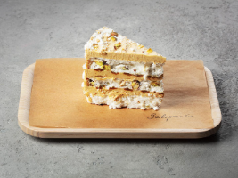

Фісташковий Завертайло
- Цукор
- Білок
- Фісташка
- Вершкове масло
- Згущенка
- Фісташкове праліне
Варіація Київського торта, на яку ми заслуговуємо. Ніжний крем – фісташковий, праліне – фісташкове, хрустка меренга – з карамелізованою фісташкою, і ще купа дробленої фісташки на останок.